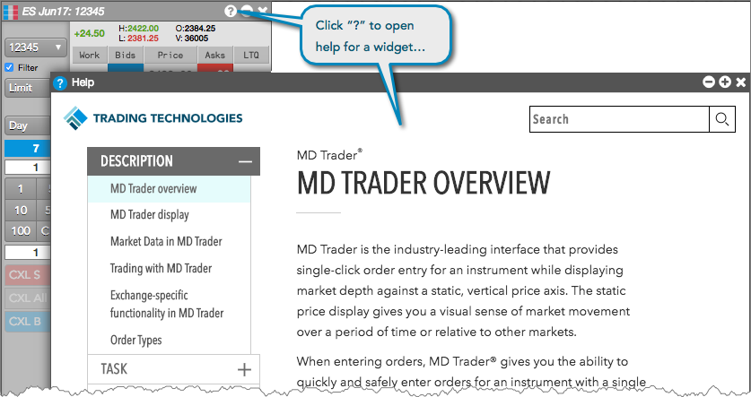
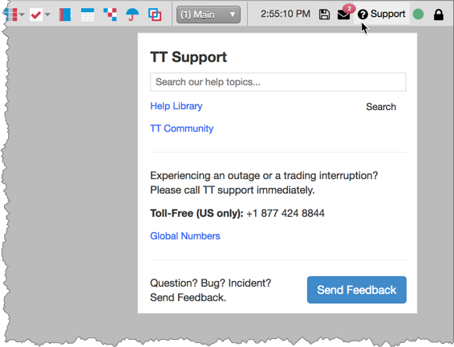
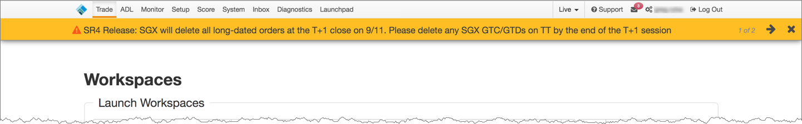
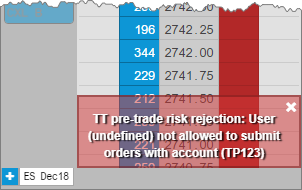

The TT help library and TT Support links can be accessed directly from the workspace menu bar or home page. In addition, you can click "?" on each widget's title bar to open the help page for the widget similar to using "F1" in X_TRADER.

Tip: If you need to report an issue, you can open an incident report directly from your open workspace.

Click Send Feedback to open the Feedback widget to report issues to TT Support along with a copy of the widget in question or your entire workspace.
Note: As needed, the TT home page and workspace will display a "Hello Bar" to inform you of events that may impact trading. The Hello Bar messages essentially replace the Customer Advisories you received on the X_TRADER platform.

In X_TRADER, order rejects and exchange issues are reported solely in the Audit Trail. On TT, in addition to displaying these messages in the Audit Trail, each open widget displays a "toast" message to inform you of any issues that may occur when connecting to an exchange or submitting an order.
